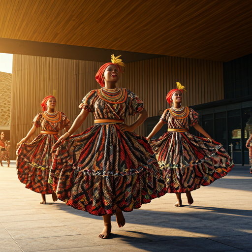

Ritmos e Cores que Contam Histórias
Ritmos, cores e histórias que revelam a alma de Luanda. Celebrações, danças e tradições que mantêm viva a identidade cultural da cidade em cada encontro.
Mergulhe no coração da identidade angolana. De festivais de Semba a exposições de arte contemporânea, Luanda é um caldeirão vibrante de criatividade.
| Evento | Local | Data |
|---|---|---|
| Festival Nacional de Cultura | Centro Cultural | Set 22 |
| Noite do Semba Tradicional | Espaço Bahia | Out 05 |
| Bienal de Luanda | Museu da Moeda | Nov 12 |

Ritmos, cores e histórias que revelam a alma de Luanda. Celebrações, danças e tradições que mantêm viva a identidade cultural da cidade em cada encontro.